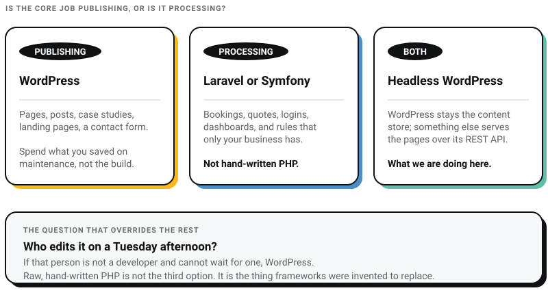
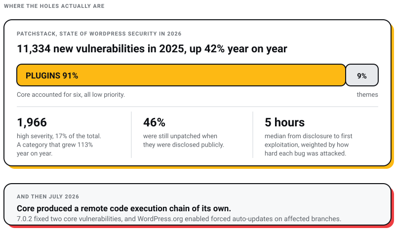
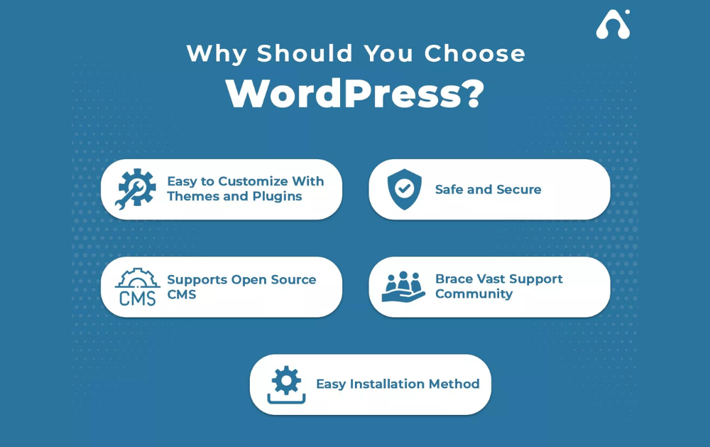
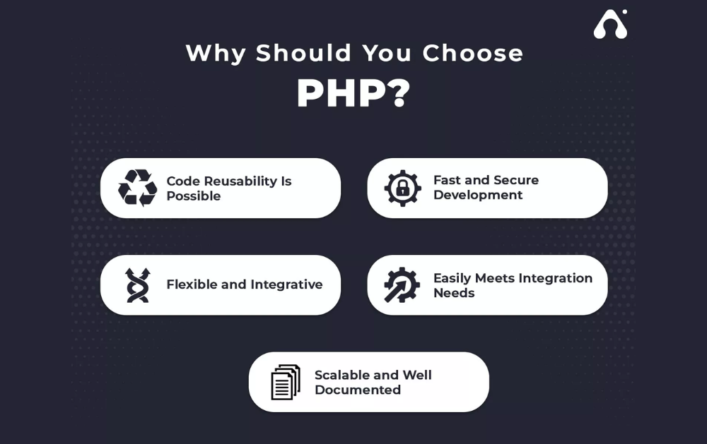

WEB DEVELOPMENT
WEB DEVELOPMENT
AI Website Builders vs Custom Development: Where the Shiny Tools Actually Break
AI website builders are fast, but are they right for your business? Discover where they excel, where they fail, and when custom development is the…

This blog runs on WordPress. I sell custom development for a living. Those two facts should tell you how honest this comparison is going to be.
I run Pixel Street, a design studio in Salt Lake, Kolkata. We build for Coca-Cola, ITC and Marico. And we publish everything you are reading on a WordPress install, because for an archive of sixty-odd articles nothing else justified the invoice. If I thought WordPress was the amateur option, my own shopfront would not be sitting on it.
The decision is almost always framed as WordPress against “custom PHP”. That framing has aged badly, and I want to deal with it before comparing anything. Almost nobody builds a business website by writing PHP from scratch in 2026. The live question is WordPress against a PHP framework, or WordPress against WordPress used differently.
If your website’s job is to publish things and collect enquiries, use WordPress, and spend what you saved on maintenance instead of on the build.
If your website’s job is to run a process that belongs to you — a booking engine, a pricing calculator, a dealer portal, an approvals workflow — use a PHP framework. Laravel or Symfony, not hand-rolled PHP.
If you need both, keep WordPress as the content store and serve the pages from something else over its REST API. That is what “headless” means, and it is what we are currently doing to this blog.
Raw, hand-written PHP is not the third option. It is the thing frameworks were invented to replace.

PHP is a language. WordPress is an application written in that language. Comparing them is like comparing Hindi to a newspaper. The comparison only ever made sense as shorthand for “a packaged CMS versus something a developer writes for me”, and the second half of that sentence has changed completely.
Look at what PHP developers actually reach for. JetBrains surveyed 1,720 developers who named PHP as their main language for The State of PHP 2025: 64% use Laravel, 25% use WordPress and 23% use Symfony. In Stack Overflow’s 2025 Developer Survey, across roughly 49,000 respondents, 18.9% had worked with PHP, 13.6% with WordPress, 8.9% with Laravel and 4% with Symfony. Neither survey has a category for “wrote PHP from scratch”, because in professional work that stopped being a plan and became an accident.
So when an agency quotes you a “custom PHP website”, ask which framework. If the answer is “our own”, you are buying a proprietary CMS with a team of one, and every developer who touches it afterwards will need to learn a codebase that exists nowhere else. I have inherited that situation and it is not a saving. If you are weighing that decision seriously, I have written separately about how to choose a web development framework and about the CMS platforms worth shortlisting.
Yes. WordPress core is PHP, its data sits in MySQL or MariaDB, and you extend it by writing more PHP. Every argument about “WordPress performance” is therefore partly an argument about PHP performance, and every PHP security practice applies to a WordPress site whether or not anyone on the project knows it.
That is also why the two are not really rivals. Choosing WordPress is choosing PHP. You are only choosing whether somebody else already wrote the first hundred thousand lines.
Most comparisons you will find are built on version numbers that have since moved. Here is the state of things on 30 July 2026, with sources, because a comparison built on stale version numbers is worse than no comparison.
WordPress is on 7.0. WordPress 7.0 “Armstrong” shipped on 20 May 2026, bringing an AI client into core, a redesigned dashboard with a command palette, and a more extensible site editor. The current release as I write is 7.0.2, from 17 July 2026.
WordPress now asks for PHP 8.3. The official requirements page lists PHP “version 8.3 or greater” and MariaDB 10.11+ or MySQL 8.0+, with HTTPS required on every install. It notes that WordPress will still run on PHP 7.4, while pointing out that PHP 7.4 is end of life.
The supported PHP versions are 8.2 through 8.5. Per php.net, PHP 8.4 and 8.5 are in active support; 8.2 and 8.3 get security fixes only. PHP 8.2’s security support ends on 31 December 2026, which is five months away. PHP 8.1 reached end of life on 31 December 2025. PHP 7.4 died on 28 November 2022.
A lot of the web has not noticed. W3Techs put PHP on 70.6% of all sites whose server-side language it can identify on 30 July 2026, and of those PHP sites, 62.4% run version 8, 29.5% still run version 7 and 8.0% still run version 5 (W3Techs). Add those last two together and 37.5% of PHP sites on the web are running a branch that stopped receiving security fixes years ago. If you take one operational thing from this post, check which PHP version your host is actually serving before you argue about platforms.
WordPress powers 41.2% of all websites and holds 59.1% of the CMS market, measured 30 July 2026 (W3Techs). That figure gets quoted constantly and almost never qualified, so here is the qualification. W3Techs draws its sample from Google’s Chrome User Experience Report plus a customised Tranco list, treats subdomains as part of the parent site, excludes redirected domains, and describes its universe as “the relevant web” rather than every registered domain. Read it as a share of sites people visit, not a census.
The standard version of this comparison runs two pros-and-cons tables, one of which lists “affects speed and performance of the website” and “can impact website speed and performance” as two separate cons for PHP. That is not a comparison, it is padding. This is the table I would actually put in front of a client.
| Criterion | WordPress, standard | Headless WordPress | Laravel or Symfony |
|---|---|---|---|
| Best fit | Content, marketing sites, blogs, brochure plus enquiries | Content-heavy sites needing a custom frontend or several output channels | Applications with rules of their own: bookings, portals, pricing, workflow |
| Time to first launch | Fastest | Slower than standard WordPress, two codebases to ship | Slowest |
| Who edits content | Anyone, on day one | Anyone, but preview and “view page” need rebuilding | Nobody until you build an admin for it |
| Where the money goes | Low build, ongoing maintenance and plugin licences | Higher build, lower runtime, maintenance on both halves | High build, low licence cost, developer needed for content changes |
| Security surface | Core plus every plugin and theme you install | Core plus plugins, but the public frontend is not running them | Core framework plus the Composer packages you chose |
| Hosting | Anything that runs PHP; managed WordPress hosts add auto-updates | PHP host for the backend plus static or Node hosting for the frontend | Any PHP host, though deployment is a real step |
| Honest ceiling | Complex logic gets bolted on and eventually fights the platform | Operational complexity doubles before traffic justifies it | Publishing anything is a developer ticket unless you build the tooling |
Notice what is missing from that table: a winner. Comparisons like this usually declare winners in nine categories, which reads well and decides nothing, because the categories are not weighted against any actual project.
The claim I keep meeting is that PHP 8 is dramatically faster than PHP 7 and that this settles the performance argument. For a WordPress site, it does not.
Kinsta benchmarked WordPress 6.8 with no plugins and no caching, using ApacheBench at 15 concurrent connections and 1,000 requests per run on a 30-vCPU Google Cloud machine, five runs per configuration. Requests per second came out at 139.06 on PHP 7.4, 146.09 on 8.2, 142.75 on 8.3, 148.22 on 8.4 and 148.30 on 8.5 (Kinsta, updated 13 December 2025). Best case against PHP 7.4, about 6.6%.
Two things follow. First, upgrade your PHP anyway, because 6.6% is free and the security position is not optional. Second, stop treating the engine as the lever. PHP 8.3 scoring below 8.2 in that run is the tell: at that point the constraint is database queries and I/O, not the interpreter. Your slow WordPress site is slow because of an unoptimised hero image, four page-builder plugins loading their own jQuery, and a shared host in a different country. Rewriting it in Laravel would not fix any of those.
What Google measures is worth knowing precisely, because there is a lot of confident nonsense about it. The Core Web Vitals thresholds on web.dev are LCP within 2.5 seconds, INP of 200 milliseconds or less, and CLS of 0.1 or less. INP became a stable Core Web Vital in 2024, replacing First Input Delay, so any audit still reporting FID is running on old assumptions. I have also seen 2.0 seconds quoted as the new LCP target. Google’s own documentation still says 2.5.
Both platforms can pass. Both routinely fail. The difference is that a framework build fails because someone wrote something slow, and a WordPress build usually fails because someone installed something slow.
The standard claim is that WordPress is more vulnerable because of third-party plugins, so PHP takes the win. The first half is well evidenced. The second half is lazier than it looks.
Patchstack recorded 11,334 new vulnerabilities across the WordPress ecosystem in 2025, up 42% year on year. Plugins accounted for 91% and themes for 9%. WordPress core accounted for six, all low priority. Of the total, 1,966 (17%) were high severity, a category that grew 113% year on year, and 46% were still unpatched when they were disclosed publicly. Weighted by how hard they were attacked, the median time from disclosure to first exploitation was five hours (Patchstack, State of WordPress Security in 2026, data updated 25 February 2026).
Two caveats I would want if I were reading this. Patchstack counts vulnerabilities entering its own database, not sites compromised, so the 42% rise partly measures how much better the ecosystem got at finding and reporting bugs. And Patchstack sells WordPress security. The numbers are still the best public accounting we have, and the shape of them matches what every host will tell you privately.
Now the part that stops this being a clean win for custom code. On 17 July 2026 WordPress shipped 7.0.2 to fix two vulnerabilities in core: “a facilitated SQL injection issue” and “a REST API batch-route confusion and SQL injection issue leading to Remote Code Execution” (WordPress 7.0.2 release notes). Remote code execution, in core, in the REST server and the query class. WordPress.org enabled forced auto-updates on affected branches, which is not a thing you do for a routine patch. Versions before 6.8 were unaffected.
So core is overwhelmingly not where the holes are, and core is also capable of producing the worst kind of hole there is. Anyone who tells you plugins are the entire story is describing 2025’s data, not July 2026’s.

The honest comparison is about who is responsible. On WordPress, thousands of people you have never met patch your dependencies, and your job is to apply those patches within hours rather than months. On a Laravel or Symfony build, you own the schedule and the blame, and your Composer dependencies are a supply chain too. The current OWASP Top 10:2025 — drawn from data on over 2.8 million applications contributed by 13 organisations — makes that explicit: Security Misconfiguration is now A02 and Software Supply Chain Failures is a new A03. A page of installed plugins is a software supply chain. So is a composer.json.
Practically, the platform matters less than three habits: updates applied on a schedule someone is accountable for, a plugin list short enough to audit, and somebody actually testing the thing. If you have never had a build put through vulnerability assessment and penetration testing, the platform argument is not your biggest problem.
WordPress is cheaper to start. That is not in dispute and I am not going to pretend otherwise to protect our own quotes.
What I do dispute is the arithmetic that stops at launch. A WordPress site accrues premium theme and plugin renewals, a maintenance retainer or the risk of not having one, and the slow accumulation of plugins added to solve problems that a small amount of custom code would have solved once. A framework build front-loads almost all of its cost and then charges you for every content change until someone builds the editing tools.
The projects where I have seen WordPress turn out expensive share one signature: the brief was a website, the reality was an application, and nobody said so out loud. Twenty plugins later, the platform is being asked to do something it was not built to do, and the eventual rebuild costs more than the framework build would have. If you are pricing this exercise for the Indian market, our breakdown of web design and development cost in Kolkata is more useful than any global average.
WordPress runs anywhere PHP runs, which is the point. Managed WordPress hosting adds automatic core updates, staging and a security layer, and takes away some control over the server. The forced auto-updates WordPress.org pushed for 7.0.2 are a good illustration of why that trade is often worth making: on a well-managed host, that patch landed while most owners were asleep.
A framework build has fewer platform-specific hosting requirements and more deployment requirements. You will want a repository, a build step and a way to roll back. If your team does not have those, that is a real cost, not a detail. For Indian projects there is also the plain latency question of where the server sits, which is why we keep a current list of hosting services in India rather than defaulting to whatever is cheapest in a US datacentre.
Pixel Street’s blog runs on WordPress, and we are rebuilding it as headless WordPress with a static frontend. WordPress stays as the editorial backend. The public site gets served as pre-built pages instead of being assembled by PHP on every request. The plumbing has been in core since WordPress 4.7 shipped REST API endpoints for posts, comments, terms, users, meta and settings on 6 December 2016, so this is not new technology. It is a decision most sites never bother to make.
Why bother here. Editors keep the interface they know, which is the single biggest reason WordPress wins arguments it should not win on technical merit. The frontend stops depending on the theme layer and on whatever a plugin decides to enqueue. And the public surface stops executing the plugin stack on every page view, which changes the shape of the security question described above without pretending to remove it. The 7.0.2 hole was in the REST server, and a headless setup leans on the REST API harder than a normal site does, so the backend still needs patching on the same schedule as anyone else’s.
What headless costs: previewing a draft is no longer free, some plugins that generate frontend HTML simply stop working, and you now have two things to deploy instead of one. I would not recommend it for a ten-page brochure site. For a growing archive that a small team publishes to constantly, the trade looks right to me.
I am deliberately not quoting before-and-after numbers, because the rebuild is in progress and I have not measured it end to end. When I have, they will go in this post.
Answer these in order and the decision usually makes itself.
These two summaries are borrowed from elsewhere, and they hold up reasonably well as a checklist.

Source:appventurez.com

Source: appventurez.com
Read the PHP column as “a PHP framework”, not as “PHP written from nothing”. That distinction is the whole argument of this post.
Is a custom PHP website faster than WordPress?
It can be, and usually for reasons that have nothing to do with PHP. A framework build ships only the code it needs, while a typical WordPress site loads a theme and a dozen plugins on every request. But the measured gap between PHP versions running WordPress itself is small: 139.06 requests per second on PHP 7.4 against 148.30 on PHP 8.5 in Kinsta’s December 2025 benchmark. Images, caching, database queries and hosting location move your Core Web Vitals far more than the platform choice does.
Which PHP version should my site run in 2026?
PHP 8.4 or 8.5, since those are the only branches in active support per php.net. PHP 8.3 is fine and gets security fixes until 31 December 2027. PHP 8.2 loses security support on 31 December 2026, so treat it as a deadline. Anything on PHP 7 or 5 needs moving now, and that is 37.5% of PHP sites according to W3Techs on 30 July 2026.
Is WordPress secure enough for a serious business site?
Yes, if somebody owns updates. Patchstack logged 11,334 ecosystem vulnerabilities in 2025 with 91% in plugins and six in core, and found the median time to first exploitation for heavily attacked bugs was five hours. That is a maintenance problem, not a platform verdict. Note also that core produced a remote code execution chain in July 2026, so “core is fine” is a probability, not a guarantee.
Do I need headless WordPress?
Probably not. It suits content-heavy sites with a custom frontend, several output channels, or a genuine need to stop the plugin layer from touching the public site. It costs you preview, some plugin compatibility, and a second deployment pipeline. We are doing it to this blog because the archive keeps growing and a non-developer publishes to it. For a brochure site it is overhead with a nice name.
Is WordPress better for SEO than a custom build?
WordPress makes competent SEO easier, mostly through plugins like Yoast or Rank Math handling titles, sitemaps and schema without a developer. Nothing about it is inherently more rankable. A framework build can do all of it, and often does it more cleanly, but only if someone specified it. The failure mode differs: WordPress sites get fat, custom sites forget the basics.
What about WooCommerce, since it is a WordPress plugin?
Different question with a different answer, and the platform comparison there turns on payments, catalogue size and who runs the store day to day. I have set that out in Shopify vs WooCommerce rather than crowding it in here.
Most people asking “WordPress or PHP” are really asking whether choosing WordPress means settling for less. It does not. It means accepting a maintenance obligation in exchange for a much shorter route to a working site, and buying into a platform that 41.2% of the web already runs, with all the plugin availability and all the attack attention that brings.
Choosing a framework does not mean choosing quality either. It means choosing to own more of the code, which is only an advantage if you also own the discipline to maintain it.
The projects I have watched go wrong went wrong at the brief, not at the platform. Somebody described an application and bought a website, or described a website and bought an application. Get that sentence right and either technology will serve you. Get it wrong and no amount of PHP 8.5 will save it. Our web design process exists mostly to force that question early.
We are a website design company in Kolkata that builds on both, and will tell you which one your project needs before you have paid us anything. If you want that conversation, ask for it.
16 min read 22 cited sources WEB DEVELOPMENT
Author
Khurshid Alam is the founder of Pixel Street, an AI-native design & development studio. Design thinking on weekdays and spreadsheets on weekends.
He writes about growth, design, and AI, mostly because someone has to say the quiet parts out loud.
WEB DEVELOPMENT
AI website builders are fast, but are they right for your business? Discover where they excel, where they fail, and when custom development is the…
 Digital Marketing
Digital Marketing
Learn about AEO vs GEO vs SEO. Discover what changed with AI search, what still matters, and how to optimize for Google AI Overviews, ChatGPT, and…
 Digital Marketing
Digital Marketing
Want ChatGPT to recommend your brand? Learn how AI chooses businesses, where citations come from, and practical ways to increase your visibility.
 Web Design
Web Design
A client asked me this on a call last month: “Khurshid, everyone just asks ChatGPT now. Do we even need a website anymore?” He runs a business doing…